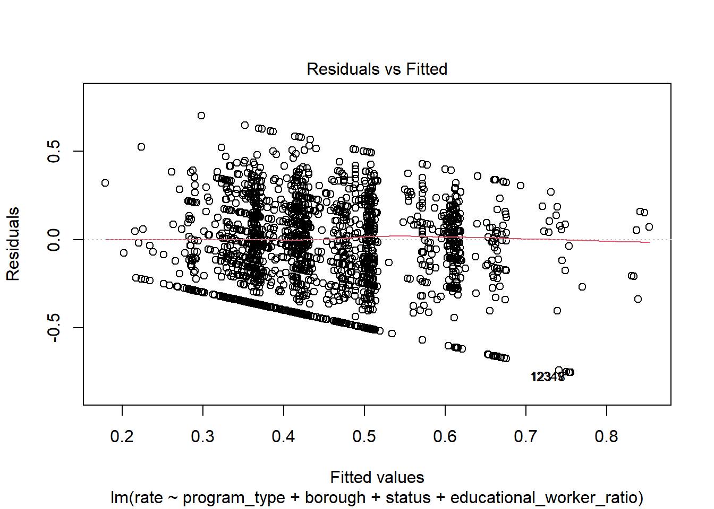
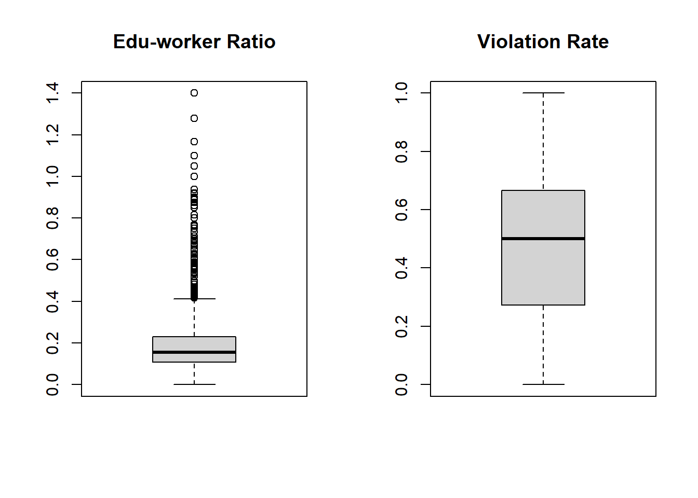

linear
2022-12-08
library(tidyverse)## Warning: package 'tidyverse' was built under R version 4.2.2## ── Attaching packages ─────────────────────────────────────── tidyverse 1.3.2 ──
## ✔ ggplot2 3.4.0 ✔ purrr 0.3.5
## ✔ tibble 3.1.8 ✔ dplyr 1.0.10
## ✔ tidyr 1.2.1 ✔ stringr 1.5.0
## ✔ readr 2.1.3 ✔ forcats 0.5.2## Warning: package 'ggplot2' was built under R version 4.2.2## Warning: package 'tidyr' was built under R version 4.2.2## Warning: package 'readr' was built under R version 4.2.2## Warning: package 'purrr' was built under R version 4.2.2## Warning: package 'stringr' was built under R version 4.2.2## ── Conflicts ────────────────────────────────────────── tidyverse_conflicts() ──
## ✖ dplyr::filter() masks stats::filter()
## ✖ dplyr::lag() masks stats::lag()library(dplyr)
library(rvest)##
## Attaching package: 'rvest'
##
## The following object is masked from 'package:readr':
##
## guess_encodinglibrary(purrr)
library(ggplot2)
library(modelr)## Warning: package 'modelr' was built under R version 4.2.2library(mgcv)## Warning: package 'mgcv' was built under R version 4.2.2## Loading required package: nlme## Warning: package 'nlme' was built under R version 4.2.2##
## Attaching package: 'nlme'
##
## The following object is masked from 'package:dplyr':
##
## collapse
##
## This is mgcv 1.8-41. For overview type 'help("mgcv-package")'.library(patchwork)
library(viridis)## Loading required package: viridisLitelibrary(fastDummies)## Warning: package 'fastDummies' was built under R version 4.2.2set.seed(1)Import original dataset
Remove repeated data
childcare_inspection_df = read_csv("./data/DOHMH_Childcare_Center_Inspections.csv") %>%
janitor::clean_names() %>%
distinct()## Rows: 26280 Columns: 34
## ── Column specification ────────────────────────────────────────────────────────
## Delimiter: ","
## chr (22): Center Name, Legal Name, Building, Street, Borough, Phone, Permit ...
## dbl (11): ZipCode, Permit Number, Building Identification Number, Violation ...
## num (1): Maximum Capacity
##
## ℹ Use `spec()` to retrieve the full column specification for this data.
## ℹ Specify the column types or set `show_col_types = FALSE` to quiet this message.Basic data cleaning
We select 22 key variables in this dataset to finish our analysis
Drop NA
Create a new variable “educational_worker_ratio”
Make all data in “program_type” and “facility_type” columns show in the same format : lower case
childcare_inspection_df = childcare_inspection_df %>%
select(center_name, borough, zip_code, status, age_range, maximum_capacity,program_type, facility_type,
child_care_type, violation_category,
violation_status,violation_rate_percent:average_critical_violation_rate,regulation_summary,
inspection_summary_result) %>%
drop_na(zip_code, age_range, violation_rate_percent,public_health_hazard_violation_rate, critical_violation_rate) %>%
filter(maximum_capacity != 0) %>%
mutate(
educational_worker_ratio = total_educational_workers/maximum_capacity,
program_type = tolower(program_type),
facility_type = tolower(facility_type),
borough = as.factor(borough),
status = as.factor(status),
program_type = as.factor(program_type),
facility_type = as.factor(facility_type),
child_care_type = as.factor(child_care_type),
age_range = as.factor(age_range)
) We calculated a new violation rate for each distinct program using violation category column.
center_specific_df = childcare_inspection_df %>%
relocate(center_name, program_type) %>%
group_by(center_name, program_type) %>%
mutate(
n_na = sum(is.na(violation_category)),
n_violation = sum(!is.na(violation_category)),
rate = n_violation/(n_violation + n_na)) %>%
arrange(center_name, program_type)Select all possible independent variables to fit a full model based on center-specific distinct records:
# select distinct records of each center
center_distinct_df = center_specific_df %>%
select(center_name, program_type, borough, status, maximum_capacity, total_educational_workers, educational_worker_ratio, rate) %>%
distinct()
# fit the full model
full_lm = center_distinct_df %>%
lm(rate ~ program_type + borough + status + educational_worker_ratio, data = .)
summary(full_lm)##
## Call:
## lm(formula = rate ~ program_type + borough + status + educational_worker_ratio,
## data = .)
##
## Residuals:
## Min 1Q Median 3Q Max
## -0.60205 -0.23726 -0.00569 0.19621 0.71194
##
## Coefficients:
## Estimate Std. Error t value Pr(>|t|)
## (Intercept) 0.66051 0.03950 16.721 < 2e-16 ***
## program_typeinfant toddler 0.03605 0.03005 1.200 0.23038
## program_typepreschool 0.06220 0.02384 2.610 0.00913 **
## program_typeschool age camp 0.02658 0.18859 0.141 0.88793
## boroughBROOKLYN -0.27805 0.01989 -13.982 < 2e-16 ***
## boroughMANHATTAN -0.20409 0.02092 -9.755 < 2e-16 ***
## boroughQUEENS -0.15109 0.02139 -7.062 2.21e-12 ***
## boroughSTATEN ISLAND -0.28740 0.03052 -9.416 < 2e-16 ***
## statusExpired-In Renewal -0.08504 0.03140 -2.709 0.00681 **
## statusPermitted -0.14425 0.02864 -5.037 5.13e-07 ***
## educational_worker_ratio -0.08238 0.04517 -1.824 0.06836 .
## ---
## Signif. codes: 0 '***' 0.001 '**' 0.01 '*' 0.05 '.' 0.1 ' ' 1
##
## Residual standard error: 0.2654 on 2139 degrees of freedom
## Multiple R-squared: 0.1141, Adjusted R-squared: 0.1099
## F-statistic: 27.54 on 10 and 2139 DF, p-value: < 2.2e-16full_lm %>%
broom::tidy() %>%
knitr::kable(digit = 3)| term | estimate | std.error | statistic | p.value |
|---|---|---|---|---|
| (Intercept) | 0.661 | 0.040 | 16.721 | 0.000 |
| program_typeinfant toddler | 0.036 | 0.030 | 1.200 | 0.230 |
| program_typepreschool | 0.062 | 0.024 | 2.610 | 0.009 |
| program_typeschool age camp | 0.027 | 0.189 | 0.141 | 0.888 |
| boroughBROOKLYN | -0.278 | 0.020 | -13.982 | 0.000 |
| boroughMANHATTAN | -0.204 | 0.021 | -9.755 | 0.000 |
| boroughQUEENS | -0.151 | 0.021 | -7.062 | 0.000 |
| boroughSTATEN ISLAND | -0.287 | 0.031 | -9.416 | 0.000 |
| statusExpired-In Renewal | -0.085 | 0.031 | -2.709 | 0.007 |
| statusPermitted | -0.144 | 0.029 | -5.037 | 0.000 |
| educational_worker_ratio | -0.082 | 0.045 | -1.824 | 0.068 |
# model diagnostics: Residuals vs Fitted plot, QQ plot, Scale_location, Residuals vs Leverage
plot(full_lm)

Fit an alternative model:
# fit an alternative model
alt_lm = center_distinct_df %>%
lm(rate ~ program_type + borough + status + maximum_capacity * total_educational_workers, data = .)
summary(alt_lm)##
## Call:
## lm(formula = rate ~ program_type + borough + status + maximum_capacity *
## total_educational_workers, data = .)
##
## Residuals:
## Min 1Q Median 3Q Max
## -0.60254 -0.24408 -0.00761 0.19708 0.72506
##
## Coefficients:
## Estimate Std. Error t value
## (Intercept) 6.565e-01 4.220e-02 15.558
## program_typeinfant toddler 1.338e-02 3.034e-02 0.441
## program_typepreschool 4.920e-02 2.672e-02 1.841
## program_typeschool age camp 2.844e-02 1.891e-01 0.150
## boroughBROOKLYN -2.806e-01 1.987e-02 -14.121
## boroughMANHATTAN -2.053e-01 2.095e-02 -9.800
## boroughQUEENS -1.530e-01 2.140e-02 -7.146
## boroughSTATEN ISLAND -2.917e-01 3.047e-02 -9.574
## statusExpired-In Renewal -8.288e-02 3.139e-02 -2.641
## statusPermitted -1.415e-01 2.862e-02 -4.945
## maximum_capacity 1.823e-05 6.949e-05 0.262
## total_educational_workers -5.254e-04 1.425e-03 -0.369
## maximum_capacity:total_educational_workers 5.805e-06 7.101e-06 0.817
## Pr(>|t|)
## (Intercept) < 2e-16 ***
## program_typeinfant toddler 0.65919
## program_typepreschool 0.06569 .
## program_typeschool age camp 0.88047
## boroughBROOKLYN < 2e-16 ***
## boroughMANHATTAN < 2e-16 ***
## boroughQUEENS 1.22e-12 ***
## boroughSTATEN ISLAND < 2e-16 ***
## statusExpired-In Renewal 0.00833 **
## statusPermitted 8.21e-07 ***
## maximum_capacity 0.79313
## total_educational_workers 0.71231
## maximum_capacity:total_educational_workers 0.41374
## ---
## Signif. codes: 0 '***' 0.001 '**' 0.01 '*' 0.05 '.' 0.1 ' ' 1
##
## Residual standard error: 0.2656 on 2137 degrees of freedom
## Multiple R-squared: 0.1134, Adjusted R-squared: 0.1084
## F-statistic: 22.78 on 12 and 2137 DF, p-value: < 2.2e-16alt_lm %>%
broom::tidy() %>%
knitr::kable(digit = 3)| term | estimate | std.error | statistic | p.value |
|---|---|---|---|---|
| (Intercept) | 0.657 | 0.042 | 15.558 | 0.000 |
| program_typeinfant toddler | 0.013 | 0.030 | 0.441 | 0.659 |
| program_typepreschool | 0.049 | 0.027 | 1.841 | 0.066 |
| program_typeschool age camp | 0.028 | 0.189 | 0.150 | 0.880 |
| boroughBROOKLYN | -0.281 | 0.020 | -14.121 | 0.000 |
| boroughMANHATTAN | -0.205 | 0.021 | -9.800 | 0.000 |
| boroughQUEENS | -0.153 | 0.021 | -7.146 | 0.000 |
| boroughSTATEN ISLAND | -0.292 | 0.030 | -9.574 | 0.000 |
| statusExpired-In Renewal | -0.083 | 0.031 | -2.641 | 0.008 |
| statusPermitted | -0.142 | 0.029 | -4.945 | 0.000 |
| maximum_capacity | 0.000 | 0.000 | 0.262 | 0.793 |
| total_educational_workers | -0.001 | 0.001 | -0.369 | 0.712 |
| maximum_capacity:total_educational_workers | 0.000 | 0.000 | 0.817 | 0.414 |
# model diagnostics: residuals vs fitted plot, QQ plot, Scale_location, Residuals vs Leverage
plot(alt_lm)
Decision: Keep full_lm model.
Assessing Multicollinearity
# vif
library(performance) ## Warning: package 'performance' was built under R version 4.2.2##
## Attaching package: 'performance'## The following objects are masked from 'package:modelr':
##
## mae, mse, rmsecheck_collinearity(full_lm)## # Check for Multicollinearity
##
## Low Correlation
##
## Term VIF VIF 95% CI Increased SE Tolerance
## program_type 2.27 [2.13, 2.42] 1.51 0.44
## borough 1.11 [1.07, 1.18] 1.06 0.90
## status 1.69 [1.60, 1.80] 1.30 0.59
## educational_worker_ratio 1.53 [1.45, 1.63] 1.24 0.65
## Tolerance 95% CI
## [0.41, 0.47]
## [0.85, 0.93]
## [0.56, 0.63]
## [0.61, 0.69]This full_lm model shows low collinearity.
Transformation
# Boxblot to check the initial distribution of outcome and key predictor
center_distinct_df %>%
par(mfrow = c(1,2))## Warning in par(., mfrow = c(1, 2)): argument 1 does not name a graphical
## parameterboxplot(center_distinct_df$educational_worker_ratio, main = "Edu-worker Ratio")
boxplot(center_distinct_df$rate, main = "Violation Rate")
# Square root transformation
full_lm_sqrt = center_distinct_df %>%
lm(sqrt(rate) ~ program_type + borough + status + educational_worker_ratio, data = .)
summary(full_lm_sqrt)##
## Call:
## lm(formula = sqrt(rate) ~ program_type + borough + status + educational_worker_ratio,
## data = .)
##
## Residuals:
## Min 1Q Median 3Q Max
## -0.74243 -0.18213 0.07062 0.22368 0.61280
##
## Coefficients:
## Estimate Std. Error t value Pr(>|t|)
## (Intercept) 0.688844 0.045128 15.264 < 2e-16 ***
## program_typeinfant toddler 0.104993 0.034333 3.058 0.00226 **
## program_typepreschool 0.138744 0.027231 5.095 3.79e-07 ***
## program_typeschool age camp -0.070818 0.215453 -0.329 0.74242
## boroughBROOKLYN -0.294240 0.022719 -12.951 < 2e-16 ***
## boroughMANHATTAN -0.222850 0.023902 -9.324 < 2e-16 ***
## boroughQUEENS -0.154797 0.024441 -6.334 2.91e-10 ***
## boroughSTATEN ISLAND -0.295042 0.034869 -8.461 < 2e-16 ***
## statusExpired-In Renewal -0.006601 0.035870 -0.184 0.85402
## statusPermitted -0.084241 0.032718 -2.575 0.01010 *
## educational_worker_ratio -0.064460 0.051608 -1.249 0.21179
## ---
## Signif. codes: 0 '***' 0.001 '**' 0.01 '*' 0.05 '.' 0.1 ' ' 1
##
## Residual standard error: 0.3032 on 2139 degrees of freedom
## Multiple R-squared: 0.09868, Adjusted R-squared: 0.09447
## F-statistic: 23.42 on 10 and 2139 DF, p-value: < 2.2e-16Decision: Since there are 0 value in the outcome variable, log-transformation is not applicable. Moreover, sqrt transformation didn’t improve model goodness of fit. Thus, we will keep the initial model and decide no transformation needed.
remove influential points
# exclude two influential records
out_df = center_distinct_df[-c(381,551),]
# fit model without influential points
full_lm_out = lm(rate ~ program_type + borough + status + educational_worker_ratio, data = out_df)
summary(full_lm_out)##
## Call:
## lm(formula = rate ~ program_type + borough + status + educational_worker_ratio,
## data = out_df)
##
## Residuals:
## Min 1Q Median 3Q Max
## -0.57969 -0.23803 -0.00579 0.19624 0.71172
##
## Coefficients:
## Estimate Std. Error t value Pr(>|t|)
## (Intercept) 0.66339 0.03943 16.826 < 2e-16 ***
## program_typeinfant toddler 0.03600 0.02999 1.200 0.23009
## program_typepreschool 0.06207 0.02378 2.610 0.00913 **
## boroughBROOKLYN -0.28068 0.01986 -14.133 < 2e-16 ***
## boroughMANHATTAN -0.20785 0.02091 -9.941 < 2e-16 ***
## boroughQUEENS -0.15365 0.02136 -7.193 8.74e-13 ***
## boroughSTATEN ISLAND -0.29008 0.03047 -9.521 < 2e-16 ***
## statusExpired-In Renewal -0.08503 0.03133 -2.714 0.00670 **
## statusPermitted -0.14459 0.02858 -5.060 4.55e-07 ***
## educational_worker_ratio -0.08186 0.04508 -1.816 0.06948 .
## ---
## Signif. codes: 0 '***' 0.001 '**' 0.01 '*' 0.05 '.' 0.1 ' ' 1
##
## Residual standard error: 0.2648 on 2138 degrees of freedom
## Multiple R-squared: 0.1156, Adjusted R-squared: 0.1119
## F-statistic: 31.04 on 9 and 2138 DF, p-value: < 2.2e-16full_lm_out %>%
broom::tidy() %>%
knitr::kable(digit = 3)| term | estimate | std.error | statistic | p.value |
|---|---|---|---|---|
| (Intercept) | 0.663 | 0.039 | 16.826 | 0.000 |
| program_typeinfant toddler | 0.036 | 0.030 | 1.200 | 0.230 |
| program_typepreschool | 0.062 | 0.024 | 2.610 | 0.009 |
| boroughBROOKLYN | -0.281 | 0.020 | -14.133 | 0.000 |
| boroughMANHATTAN | -0.208 | 0.021 | -9.941 | 0.000 |
| boroughQUEENS | -0.154 | 0.021 | -7.193 | 0.000 |
| boroughSTATEN ISLAND | -0.290 | 0.030 | -9.521 | 0.000 |
| statusExpired-In Renewal | -0.085 | 0.031 | -2.714 | 0.007 |
| statusPermitted | -0.145 | 0.029 | -5.060 | 0.000 |
| educational_worker_ratio | -0.082 | 0.045 | -1.816 | 0.069 |
Decision: Influential points should be removed.
model validation
library(caret)## Warning: package 'caret' was built under R version 4.2.2## Loading required package: lattice##
## Attaching package: 'caret'## The following object is masked from 'package:purrr':
##
## lift# Use 5-fold validation and create the training sets
train = trainControl(method = "cv", number = 5)
model_caret = train(rate ~ program_type + borough + status + educational_worker_ratio,
data = out_df,
trControl = train,
method = 'lm',
na.action = na.pass)## Warning in predict.lm(modelFit, newdata): prediction from a rank-deficient fit
## may be misleading## Warning in predict.lm(modelFit, newdata): prediction from a rank-deficient fit
## may be misleading
## Warning in predict.lm(modelFit, newdata): prediction from a rank-deficient fit
## may be misleading
## Warning in predict.lm(modelFit, newdata): prediction from a rank-deficient fit
## may be misleading
## Warning in predict.lm(modelFit, newdata): prediction from a rank-deficient fit
## may be misleadingmodel_caret$finalModel##
## Call:
## lm(formula = .outcome ~ ., data = dat)
##
## Coefficients:
## (Intercept) `program_typeinfant toddler`
## 0.66339 0.03600
## program_typepreschool `program_typeschool age camp`
## 0.06207 NA
## boroughBROOKLYN boroughMANHATTAN
## -0.28068 -0.20785
## boroughQUEENS `boroughSTATEN ISLAND`
## -0.15365 -0.29008
## `statusExpired-In Renewal` statusPermitted
## -0.08503 -0.14459
## educational_worker_ratio
## -0.08186print(model_caret)## Linear Regression
##
## 2148 samples
## 4 predictor
##
## No pre-processing
## Resampling: Cross-Validated (5 fold)
## Summary of sample sizes: 1718, 1720, 1718, 1718, 1718
## Resampling results:
##
## RMSE Rsquared MAE
## 0.2653523 0.1110992 0.2202588
##
## Tuning parameter 'intercept' was held constant at a value of TRUEFinal linear model: full_lm_out